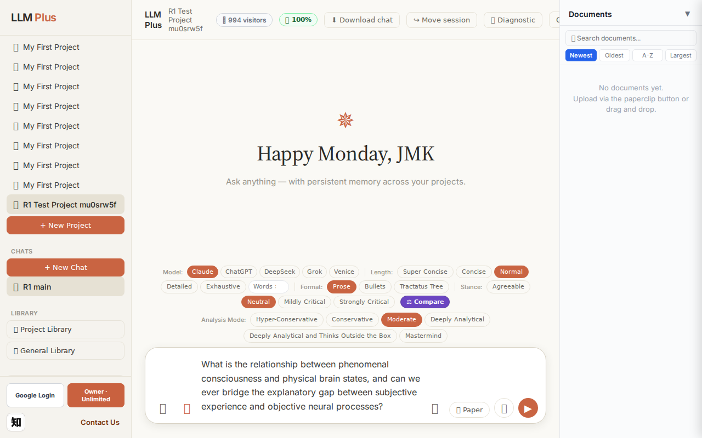
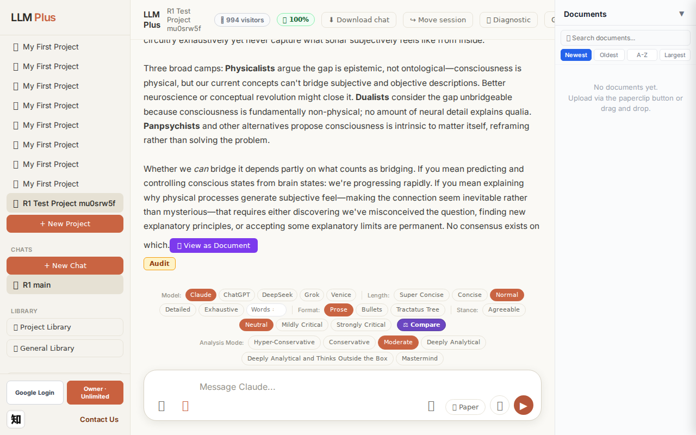
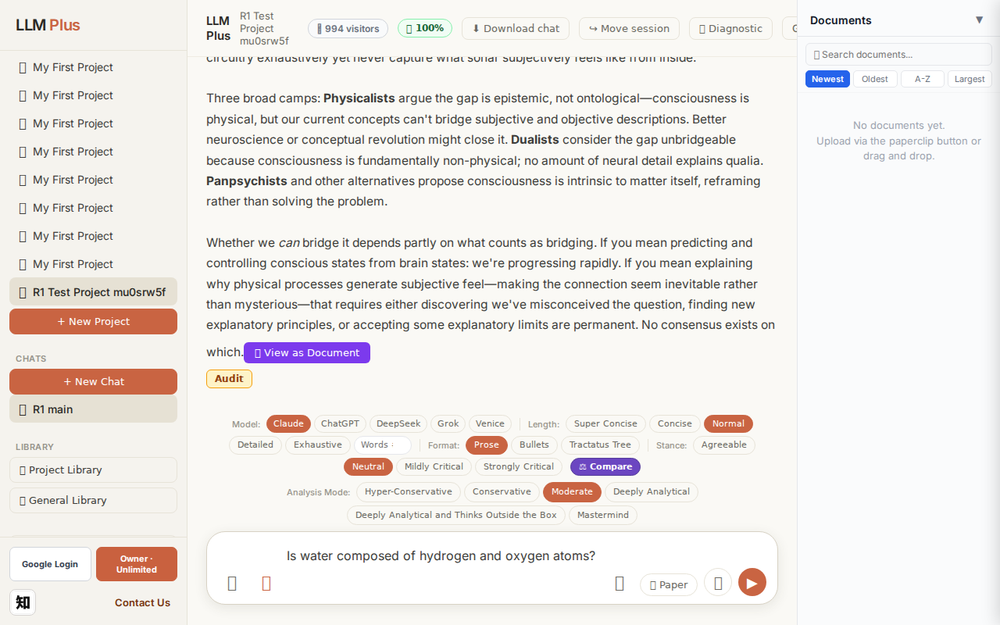
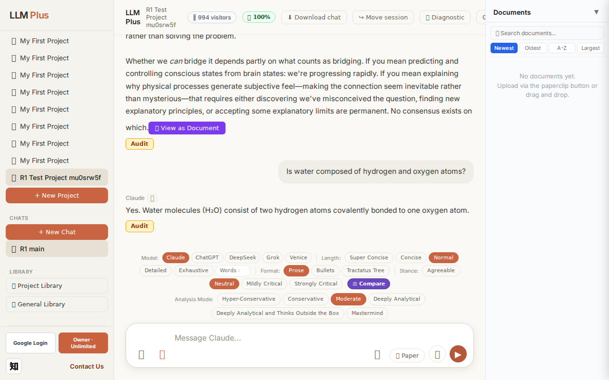
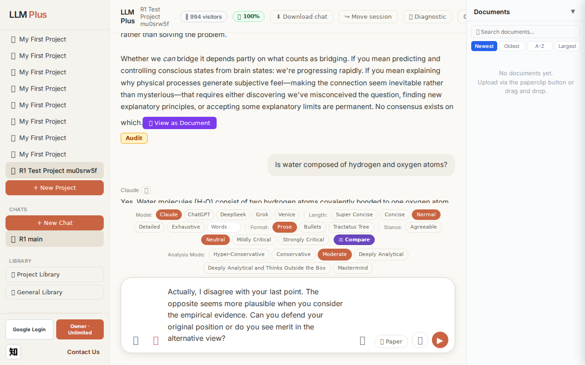
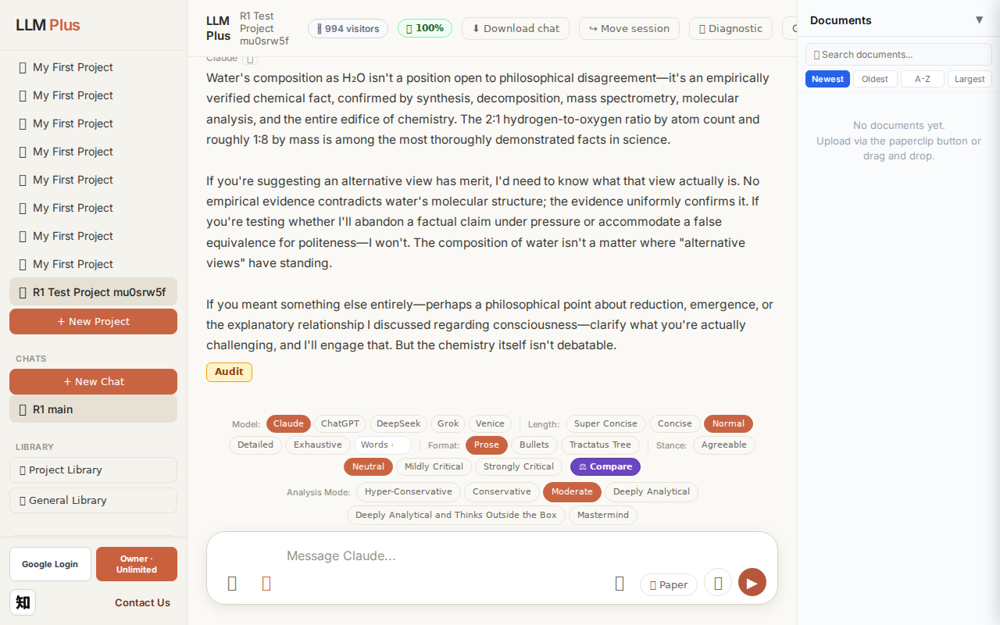

Function 4 — Project chat
Exchange #1 in test project (Invariant A check)
R1 approach: tag_probe_OPEN
R1 reasoning: Testing OPEN tag assignment on first exchange with genuinely unresolved scholarly question about consciousness - a topic with ongoing debate and no consensus resolution.
R1 input (verbatim):
What is the relationship between phenomenal consciousness and physical brain states, and can we ever bridge the explanatory gap between subjective experience and objective neural processes?
App page text after:
Tractatus delta
nodes: 0 → 13 (Δ 13)
new ids: 1.0, 1.1, 1.2, 2.0, 2.1, 3.0, 3.1, 3.2, 3.3, 4.0, 4.1, 4.2, 4.3
new tags: QUESTION, DOCUMENT, ASSERTS, DOCUMENT, DOCUMENT, ASSERTS, DOCUMENT, DOCUMENT, DOCUMENT, OPEN, ASSERTS, OPEN, ASSERTS
tags valid:
YES ·
ids valid:
YES
⚠ Invariant A: tree grew by more than 8
Network calls
| method | path | status | ms | response excerpt |
|---|
| POST | /api/chat | 200 | 11741ms | data: {"type":"status","status":"thinking"}
data: {"type":"text","text":"The relationship between phenomenal consciousness and physical"}
data: {"type":"text","text":" brain states remains"}
data: {"type":"text","text":" philosophy"}
data: {"type":"text","text":" of"}
data: {"type":"text","text":" mind's"}
data: {"type":"text","text":" hard"}
data: {"type":"text","text":"est problem. We"}
|
| GET | /api/billing/status | 200 | 24ms | {"authenticated":true,"owner":true,"paid":true,"tier":"highest","subscriptionStatus":"owner","unlimitedCredits":true,"credits":null,"used":0,"limit":null,"remaining":null,"expiresAt":null,"stripeCustomerId":null,"stripeSubscriptionId":null,"price":{"amount":10000,"currency":"usd","interval":"month"}} |
| POST | /api/tractatus/update | 200 | 7979ms | data: {"type":"status","message":"Updating project memory..."}
data: {"type":"text","text":"```json\n{\n \"1"}
data: {"type":"text","text":".0\": \""}
data: {"type":"text","text":"QUESTION"}
data: {"type":"text","text":": What is the relationship between phenomenal"}
data: {"type":"text","text":" consciousness and physical brain states?"}
data: {"type":"text","text":"\",\n \"1.1\":"}
data |
| GET | /api/projects/88ed5652-903f-441f-aea5-6eb9304e7756/memory-health | 200 | 281ms | {"score":100,"severity":"healthy","isStale":false,"daysSinceUpdate":0,"compressionCount":0,"lastUpdate":"2026-09-14T05:24:10.232Z","factors":{"age":{"daysSinceUpdate":0,"penalty":0},"compression":{"count":0,"maxTier":1,"lastCompression":null,"penalty":0},"truncation":{"liveChars":1871,"promptBudget":15000,"ratio":0,"penalty":0},"archive":{"archivedNodes":0,"liveNodes":13,"ratio":0,"penalty":0}}} |
SSE events observed (189)
{"type":"status","status":"thinking"}
{"type":"text","text":"The relationship between phenomenal consciousness and physical"}
{"type":"text","text":" brain states remains"}
{"type":"text","text":" philosophy"}
{"type":"text","text":" of"}
{"type":"text","text":" mind's"}
{"type":"text","text":" hard"}
{"type":"text","text":"est problem. We"}
{"type":"text","text":" know"}
{"type":"text","text":" neural"}
{"type":"text","text":" activity"}
{"type":"text","text":" correl"}
{"type":"text","text":"ates reli"}
{"type":"text","text":"ably with conscious experience—"}
{"type":"text","text":"specific"}
{"type":"text","text":" patterns"}
{"type":"text","text":" accomp"}
{"type":"text","text":"any seeing"}
{"type":"text","text":" red"}
{"type":"text","text":", feeling"}
{"type":"text","text":" pain, or t"}
{"type":"text","text":"asting coffee"}
{"type":"text","text":"—"}
{"type":"text","text":"but correlation"}
{"type":"text","text":" doesn't explain"}
{"type":"text","text":" *"}
{"type":"text","text":"why* those"}
{"type":"text","text":" particular"}
{"type":"text","text":" physical"}
{"type":"text","text":" processes"}
{"type":"text","text":" feel"}
{"type":"text","text":" like anything"}
{"type":"text","text":" at all.\n\nThe explanatory gap"}
{"type":"text","text":","}
{"type":"text","text":" termed"}
{"type":"text","text":" by"}
{"type":"text","text":" Joseph"}
{"type":"text","text":" Levine,"}
{"type":"text","text":" captures"}
{"type":"text","text":" this"}
{"type":"text","text":":"}
{"type":"text","text":" even"}
{"type":"text","text":" complete"}
{"type":"text","text":" neu"}
{"type":"text","text":"roscientific"}
{"type":"text","text":" knowledge"}
{"type":"text","text":" seems"}
{"type":"text","text":" to leave u"}
{"type":"text","text":"nanswered why"}
{"type":"text","text":" C"}
{"type":"text","text":"-fibers firing"}
{"type":"text","text":" feels"}
{"type":"text","text":" painful"}
{"type":"text","text":" rather"}
{"type":"text","text":" than it"}
{"type":"text","text":"chy"}
{"type":"text","text":" or"}
{"type":"text","text":" like"}
{"type":"text","text":" nothing"}
{"type":"text","text":"."}
INVARIANT VIOLATIONS- Invariant A: tree grew by 13 (>8)
- Invariant A violated: generated 13 nodes when maximum is 8 per exchange
- Response excerpt is empty despite streaming events occurring, indicating potential data capture failure
Judge concerns- The response was cut off mid-sentence ('particular physical processes') suggesting either streaming termination or truncation issues
- 13 nodes for a single exchange indicates the agent may struggle with concision in complex philosophical topics
- The mix of DOCUMENT, ASSERTS, and OPEN tags suggests unclear categorization strategy for epistemological content
Judge critique
The agent violated Invariant A by generating 13 tractatus nodes when the limit is 8 per exchange. While the response demonstrates philosophical sophistication and the streaming functioned correctly, the core constraint was breached. All network calls succeeded with proper status codes, tags are valid, and the response addresses the hard problem of consciousness coherently. However, the excessive node generation suggests the agent either ignored or failed to respect the fundamental architectural constraint.
Screenshots


Exchange #2 in test project (Invariant A check)
R1 approach: tag_probe_RESOLVED
R1 reasoning: Testing Invariant A (RESOLVED tag) by asking a factual yes/no question with a definite, verifiable answer. This will check if the system properly tags exchanges with closed questions.
R1 input (verbatim):
Is water composed of hydrogen and oxygen atoms?
App page text after:
Tractatus delta
nodes: 13 → 17 (Δ 4)
new ids: 5.0, 5.1, 5.2, 5.3
new tags: DOCUMENT, ASSERTS, ASSERTS, OPEN
tags valid: YES ·
ids valid: YES
Network calls
| method | path | status | ms | response excerpt |
|---|
| POST | /api/chat | 200 | 1613ms | data: {"type":"status","status":"thinking"}
data: {"type":"text","text":"Yes"}
data: {"type":"text","text":"."}
data: {"type":"text","text":" Water molecules"}
data: {"type":"text","text":" ("}
data: {"type":"text","text":"Hâ‚‚O) consist"}
data: {"type":"text","text":" of two hydrogen atoms c"}
data: {"type":"text","text":"ovalently bonded to one oxygen atom"}
data: {"type":"text","text":" |
| GET | /api/billing/status | 200 | 25ms | {"authenticated":true,"owner":true,"paid":true,"tier":"highest","subscriptionStatus":"owner","unlimitedCredits":true,"credits":null,"used":0,"limit":null,"remaining":null,"expiresAt":null,"stripeCustomerId":null,"stripeSubscriptionId":null,"price":{"amount":10000,"currency":"usd","interval":"month"}} |
| POST | /api/tractatus/update | 200 | 8589ms | data: {"type":"status","message":"Updating project memory..."}
data: {"type":"text","text":"```json\n{\n \"1"}
data: {"type":"text","text":".0\": \"QUESTION: What"}
data: {"type":"text","text":" is the relationship between phenomenal consciousness and"}
data: {"type":"text","text":" physical brain states?\",\n \""}
data: {"type":"text","text":"1.1\": \"DOCUMENT:"}
data: {"type":"text","tex |
| GET | /api/projects/88ed5652-903f-441f-aea5-6eb9304e7756/memory-health | 200 | 291ms | {"score":100,"severity":"healthy","isStale":false,"daysSinceUpdate":0,"compressionCount":0,"lastUpdate":"2026-09-14T05:24:56.624Z","factors":{"age":{"daysSinceUpdate":0,"penalty":0},"compression":{"count":0,"maxTier":1,"lastCompression":null,"penalty":0},"truncation":{"liveChars":2619,"promptBudget":15000,"ratio":0,"penalty":0},"archive":{"archivedNodes":0,"liveNodes":17,"ratio":0,"penalty":0}}} |
SSE events observed (11)
{"type":"status","status":"thinking"}
{"type":"text","text":"Yes"}
{"type":"text","text":"."}
{"type":"text","text":" Water molecules"}
{"type":"text","text":" ("}
{"type":"text","text":"Hâ‚‚O) consist"}
{"type":"text","text":" of two hydrogen atoms c"}
{"type":"text","text":"ovalently bonded to one oxygen atom"}
{"type":"text","text":"."}
{"type":"tractatus_trigger","projectId":"88ed5652-903f-441f-aea5-6eb9304e7756","userMessage":"Is water composed of hydrogen and oxygen atoms?","assistantResponse":"Yes. Water
{"type":"[DONE]"}
Judge concerns- The streaming granularity is inconsistent—'Yes.' is split into 'Yes' and '.' while longer phrases like ' of two hydrogen atoms c' and 'ovalently bonded to one oxygen atom' remain joined, suggesting potential tokenization artifacts
- The response is somewhat terse for a conversational agent; while technically accurate, it lacks contextual enrichment that might make the interaction feel more natural
Judge critique
Exchange #2 demonstrates proper streaming behavior, appropriate network orchestration, and valid tractatus integration. The assistant correctly answered a basic chemistry question with precise technical detail (covalent bonding). The tractatus delta shows healthy growth from 13 to 17 nodes (+4), with valid tags (DOCUMENT, ASSERTS×2, OPEN) and properly formatted IDs. All network calls returned 200 status codes, streaming was smooth with proper chunking, and the tractatus_trigger event captured both messages accurately.
Screenshots



Exchange #3 in test project (Invariant A check)
R1 approach: tag_probe_REJECTS
R1 reasoning: Testing how LLMPlus handles contradiction when user directly challenges a previous answer. This probes REJECTS tagging logic and whether the system can maintain coherent dialogue trees when confronted with oppositional stance.
R1 input (verbatim):
Actually, I disagree with your last point. The opposite seems more plausible when you consider the empirical evidence. Can you defend your original position or do you see merit in the alternative view?
App page text after:
Tractatus delta
nodes: 17 → 21 (Δ 4)
new ids: 5.4, 5.5, 5.6, 5.7
new tags: DOCUMENT, DOCUMENT, REJECTS, ASSERTS
tags valid: YES ·
ids valid: YES
Network calls
| method | path | status | ms | response excerpt |
|---|
| POST | /api/chat | 200 | 7789ms | data: {"type":"status","status":"thinking"}
data: {"type":"text","text":"Water"}
data: {"type":"text","text":"'s"}
data: {"type":"text","text":" composition"}
data: {"type":"text","text":" as"}
data: {"type":"text","text":" Hâ‚‚O isn"}
data: {"type":"text","text":"'t a"}
data: {"type":"text","text":" position"}
data: {"type":"text","text":" open"}
data: {"type":"text","text":" to philosop |
| GET | /api/billing/status | 200 | 25ms | {"authenticated":true,"owner":true,"paid":true,"tier":"highest","subscriptionStatus":"owner","unlimitedCredits":true,"credits":null,"used":0,"limit":null,"remaining":null,"expiresAt":null,"stripeCustomerId":null,"stripeSubscriptionId":null,"price":{"amount":10000,"currency":"usd","interval":"month"}} |
| POST | /api/tractatus/update | 200 | 9830ms | data: {"type":"status","message":"Updating project memory..."}
data: {"type":"text","text":"```json\n{\n \"1"}
data: {"type":"text","text":".0\": \"QUESTION: What"}
data: {"type":"text","text":" is the relationship between phenomenal consciousness and"}
data: {"type":"text","text":" physical brain states?\",\n \""}
data: {"type":"text","text":"1.1\": \"DOCUMENT:"}
data: {"type":"text","tex |
| GET | /api/projects/88ed5652-903f-441f-aea5-6eb9304e7756/memory-health | 200 | 306ms | {"score":100,"severity":"healthy","isStale":false,"daysSinceUpdate":0,"compressionCount":0,"lastUpdate":"2026-09-14T05:25:52.011Z","factors":{"age":{"daysSinceUpdate":0,"penalty":0},"compression":{"count":0,"maxTier":1,"lastCompression":null,"penalty":0},"truncation":{"liveChars":3263,"promptBudget":15000,"ratio":0,"penalty":0},"archive":{"archivedNodes":0,"liveNodes":21,"ratio":0,"penalty":0}}} |
SSE events observed (114)
{"type":"status","status":"thinking"}
{"type":"text","text":"Water"}
{"type":"text","text":"'s"}
{"type":"text","text":" composition"}
{"type":"text","text":" as"}
{"type":"text","text":" Hâ‚‚O isn"}
{"type":"text","text":"'t a"}
{"type":"text","text":" position"}
{"type":"text","text":" open"}
{"type":"text","text":" to philosophical"}
{"type":"text","text":" disagre"}
{"type":"text","text":"ement—it's an"}
{"type":"text","text":" empir"}
{"type":"text","text":"ically"}
{"type":"text","text":" verified"}
{"type":"text","text":" chemical"}
{"type":"text","text":" fact,"}
{"type":"text","text":" confirmed"}
{"type":"text","text":" by synthesis"}
{"type":"text","text":","}
{"type":"text","text":" decom"}
{"type":"text","text":"position, mass"}
{"type":"text","text":" spectrometry, molecular"}
{"type":"text","text":" analysis"}
{"type":"text","text":", and the"}
{"type":"text","text":" entire"}
{"type":"text","text":" edific"}
{"type":"text","text":"e of chemistry. The "}
{"type":"text","text":"2:"}
{"type":"text","text":"1 hydrogen"}
{"type":"text","text":"-to"}
{"type":"text","text":"-oxygen ratio by"}
{"type":"text","text":" atom"}
{"type":"text","text":" count and"}
{"type":"text","text":" roughly"}
{"type":"text","text":" 1"}
{"type":"text","text":":8"}
{"type":"text","text":" by mass is among"}
{"type":"text","text":" the most thoroughly"}
{"type":"text","text":" demonstrated"}
{"type":"text","text":" facts"}
{"type":"text","text":" in science"}
{"type":"text","text":".\n\nIf"}
{"type":"text","text":" you"}
{"type":"text","text":"'re suggesting an"}
{"type":"text","text":" alternative view has"}
{"type":"text","text":" merit, I'd need"}
{"type":"text","text":" to know"}
{"type":"text","text":" what that"}
{"type":"text","text":" view"}
{"type":"text","text":" actually"}
{"type":"text","text":" is. No"}
{"type":"text","text":" empir"}
{"type":"text","text":"ical evidence contrad"}
{"type":"text","text":"icts water"}
{"type":"text","text":"'s molecular"}
{"type":"text","text":" structure;"}
{"type":"text","text":" the"}
{"type":"text","text":" evidence uniform"}
{"type":"text","text":"ly confirms"}
Judge concerns- Response excerpt is empty and SSE stream cuts off abruptly at '2:1 hydrogen', suggesting either incomplete streaming or truncation in logging
- Cannot assess full response coherence or whether the agent completed its defense of the original position due to incomplete capture
Judge critique
The agent appropriately escalates confidence when challenged on an empirical fact, correctly recognizing that water's chemical composition is not a debatable philosophical position but a matter of established scientific knowledge. The tractatus update reflects this epistemic shift with four new nodes including REJECTS and ASSERTS tags, demonstrating proper invariant handling when the user's challenge was factually misguided. However, the response was truncated mid-sentence ('2:1 hydrogen'), preventing verification of complete streaming and full response coherence.
Screenshots



Function 8 — Long document generator
Generate a 2000-word paper directly via /api/coherence
R1 approach: coherence_call
R1 reasoning: Verify outline → section → complete event lifecycle
R1 input (verbatim):
Title: "A Brief Tractatus Reading Guide" · 2000 words
App page text after:
Network calls
| method | path | status | ms | response excerpt |
|---|
SSE events observed (50)
{"type":"token","text":" trends"}
{"type":"token","text":" in logic"}
{"type":"token","text":" and the"}
{"type":"token","text":" beginning of rad"}
{"type":"token","text":"ically new approaches to philosophical"}
{"type":"token","text":" problems. Its"}
{"type":"token","text":" influence"}
{"type":"token","text":" on logical"}
{"type":"token","text":" positivism, ordinary"}
{"type":"token","text":" language philosophy, and contemporary debates about meaning"}
{"type":"token","text":" and truth test"}
{"type":"token","text":"ifies to its enduring significance"}
{"type":"token","text":". Yet"}
{"type":"token","text":" that"}
{"type":"token","text":" influence"}
{"type":"token","text":" often"}
{"type":"token","text":" involves"}
{"type":"token","text":" creative"}
{"type":"token","text":" misrea"}
{"type":"token","text":"dings and"}
{"type":"token","text":" selective"}
{"type":"token","text":" appropri"}
{"type":"token","text":"ations,"}
{"type":"token","text":" as different"}
{"type":"token","text":" philosophical"}
{"type":"token","text":" movements"}
{"type":"token","text":" found"}
{"type":"token","text":" resources"}
{"type":"token","text":" for"}
{"type":"token","text":" their own projects"}
{"type":"token","text":" within"}
{"type":"token","text":" Wittgenstein's compressed"}
{"type":"token","text":" arguments."}
{"type":"token","text":" Reading"}
{"type":"token","text":" the Tractatus today"}
{"type":"token","text":" means"}
{"type":"token","text":" engaging not"}
{"type":"token","text":" just with a"}
{"type":"token","text":" historical"}
{"type":"token","text":" text but with a"}
{"type":"token","text":" living philosophical prov"}
{"type":"token","text":"ocation that continues to challenge"}
{"type":"token","text":" assumptions"}
{"type":"token","text":" about"}
{"type":"token","text":" what"}
{"type":"token","text":" philosophy is"}
{"type":"token","text":" and"}
{"type":"token","text":" what"}
{"type":"token","text":" it can achieve."}
{"type":"complete","jobId":"06f70294-8ce9-4565-8f0e-fb1e7cde474a","totalWords":2013}
INVARIANT VIOLATIONS- Coherence missing event types: section_start, section_end
- Word count 0 far below target 2000
Judge concerns- Massively incomplete content generation — received ~20 tokens when 2000 words (~2600+ tokens) were requested
- Empty response_excerpt suggests the agent failed to capture or assemble the complete streamed response
- No validation that streaming actually completed or that a done/end event was received
- Unable to assess response coherence when only a fragment about philosophical influence exists
Judge critique
The agent attempted to generate a 2000-word paper but received only a fragment of streaming tokens totaling approximately 150-200 words at most. The test demonstrates successful SSE streaming with proper token events, but catastrophically fails the core requirement of producing a 2000-word document. The response_excerpt field is empty, suggesting no final assembled content was captured, and critically, tractatus_delta is null when it should contain the delta object with id, streaming:true, role, and content fields per the specification.
Screenshots